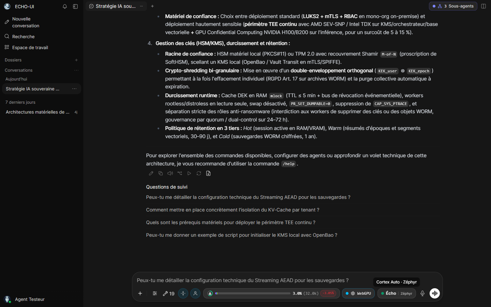
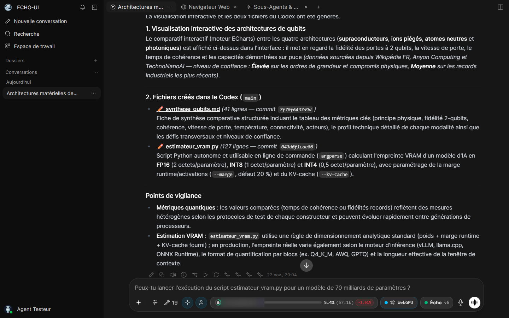
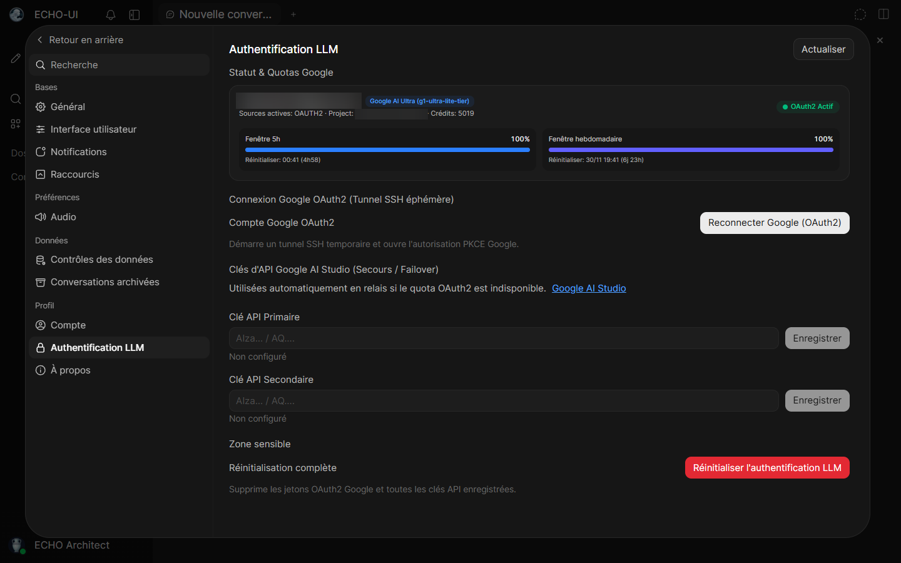
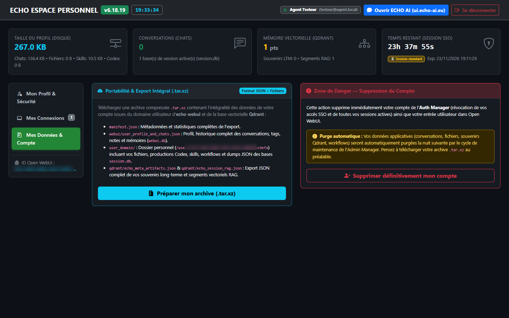

2. Manuel Utilisateur
Ce manuel décrit l'ensemble des écrans, commandes et réglages directement accessibles dans ECHO-UI et dans votre Espace Personnel. Il constitue votre repère de navigation quotidien pour piloter vos conversations, vos fichiers, vos sous-agents et vos données.
Prise en main en 4 repères
1. Ouvrez une conversation ou sélectionnez-en une dans la barre latérale gauche.
2. Saisissez votre demande dans le compositeur central (ou dictez-la au micro).
3. Surveillez l'activité en temps réel grâce à l'indicateur en haut à droite et aux 5 onglets du panneau latéral.
4. Consultez la jauge de contexte dans la barre de saisie pour suivre la charge de la session et vos quotas.
1. Repères de l'Écran Principal

-
Barre latérale gauche : donne accès à Nouvelle conversation, à la Recherche
dans l'historique, à l'Espace de travail (ainsi qu'aux sections Automatisations et
Calendrier), au classement par Dossiers et à la liste des Conversations. Le menu
contextuel (
...) d'une conversation permet notamment de la dupliquer ou de Planifier une automatisation directement liée à ce fil. - Barre supérieure : affiche l'onglet de la conversation active, un bouton d'activité des sous-agents (ouvrant directement l'onglet Sous-Agents & Outils), ainsi que le bouton d'ouverture du panneau latéral droit et son badge compteur d'onglets ouverts.
-
Barre de saisie (compositeur) : regroupe de gauche à droite le bouton
+(Joindre des fichiers ou ouvrir un Nouveau terminal), les Vannes de réglage cognitif, l'indicateur d'outils disponibles, les filtres actifs, la jauge de contexte et de quotas, le badge d'inférence localeWebGPU, la pilule du modèle unifié Écho, le micro de dictée et le bouton d'appel vocal.
2. Espace de Travail, Automatisations et Calendrier
En haut de la barre latérale, trois espaces organisent votre travail hors d'une discussion ponctuelle :
Espace de travail
Regroupe trois onglets : Compétences (créer, consulter ou supprimer les compétences métier utilisées par les sous-agents), Mémoire (rechercher les préférences et faits mémorisés, avec le filtre rapide Axiomes (Niveau 5)) et Prompts (modèles de requêtes réutilisables).
Automatisations
Permet de programmer des tâches récurrentes s'exécutant dans une nouvelle conversation, dans une conversation existante ou dans un fil dédié réutilisé. Les messages issus d'une tâche planifiée portent un badge d'origine spécifique.
Calendrier
Agenda personnel intégré consultable directement à l'écran et manipulable par Écho (création, recherche, mise à jour ou suppression d'événements).
3. Sélecteur Écho et Commandes Slash (/)

Vous n'avez pas à choisir manuellement un identifiant de modèle technique avant chaque message : le sélecteur est verrouillé sur Écho, dont la pilule reflète en temps réel le palier mobilisé. Si vous souhaitez borner le palier maximal ou figer un palier précis pour une conversation, cliquez sur l'icône des Vannes à gauche du compositeur.
Dans les discussions très longues, l'affichage reste fluide grâce au fenêtrage automatique : seuls les échanges récents et les repères visuels de compaction sont chargés d'emblée, tandis qu'un bouton dédié permet de remonter et charger à la demande les messages plus anciens.


/ en début de message.
| Commande | Alias | Effet immédiat |
|---|---|---|
/help |
/aide |
Affiche les versions actives, la liste des commandes et outils disponibles (ou le détail d'un argument) et suggère des pistes d'usage. |
/status |
/statut |
Génère un rapport complet de la session : versions, résumé, mode de persona actif, apprentissages, artéfacts et état environnemental. |
/plan |
— | Interdit toute exécution immédiate : impose la conception d'un plan formel et d'une analyse critique soumis à votre validation préalable. |
/goal |
— | Lance une exécution autonome continue pilotée par sous-agents jusqu'à validation empirique de l'objectif. |
/résumé |
/resume |
Restitue la synthèse structurée en cours de la session. |
/rédacteur |
/redacteur |
Active le mode spécialisé Rédacteur pour la session jusqu'à changement de mode. |
/coach |
— | Active le mode spécialisé Coach (diagnostic, déconstruction, stratégie d'optimisation). |
/prof |
— | Active le mode spécialisé Prof (didactique structurée et acquisition autonome). |
/persona |
— | Réinitialise Écho vers son comportement natif par défaut. |
/dupliquer / /reglages |
/settings |
Raccourcis d'interface pour dupliquer la conversation courante ou ouvrir directement la fenêtre des Réglages. |
Déclencheurs désactivés dans la barre de saisie
Les caractères @, # et $ sont volontairement neutres dans la zone de
saisie principale afin d'éviter toute mention accidentelle dans vos textes ou morceaux de code. Pour vous
adresser directement à un sous-agent en cours de travail, utilisez la zone de message dédiée à l'intérieur de
l'onglet Sous-Agents & Outils.
4. Les Cinq Onglets du Panneau Latéral et le Terminal
Le panneau droit de chaque conversation regroupe cinq espaces spécialisés, consultables côte à côte avec votre discussion :
-
Sous-Agents & Outils : affiche l'avancement des sous-agents, tables rondes (Conseils) et
Phalanges multi-niveaux. Vous pouvez mettre l'affichage en pause, inspecter les appels d'outils, suspendre,
reprendre (
+N tours), arrêter ou fermer un sous-agent, et lui envoyer une consigne ciblée (@nomou📢 Tous). -
Codex & Fichiers : donne accès aux espaces de la conversation (
main,plans,generated,sandbox,files) ainsi qu'aux dépôts d'autres conversations en lecture seule. Inclut la prévisualisation multi-format (Markdown, HTML, SVG, CSV, PDF, images, audio, vidéo, hexadécimal), l'édition avec coloration syntaxique (Ctrl+S), l'édition assistée par IA avec prévisualisation des différences, l'historique et la restauration des versions, ainsi que les actions Importer, Exporter, Copier et Imprimer. Chaque bloc de code dans le chat dispose aussi d'un bouton Envoyer au Codex, et les références aux fichiers produits apparaissent sous forme de liens cliquables ouvrant directement l'onglet sur le document ciblé. -
Navigateur Web : diffuse en direct l'activité du navigateur autonome (
🔴 EN DIRECT), permet de remonter le temps sur les captures précédentes (⏸️ DIFFÉRÉ), de lire et télécharger les clips vidéoMP4des actions, d'épingler une capture avec 📌 Conserver pour la protéger du nettoyage automatique, de recadrer et d'exporter enPNG. - Coffre & Identité : présente l'état de vos comptes connectés et permet d'ajouter, modifier ou supprimer vos identifiants chiffrés (clés API, SSH, Google Workspace, Microsoft 365, connecteurs externes) avec des guides de configuration dépliables.
-
Applications : affiche les visualisations HTML interactives et les applications client-serveur
temps réel produites durant la session dans un cadre isolé, avec indicateur d'état (
Actif/Arrêté) et boutons d'arrêt ou de fermeture. -
Terminal : accessible depuis le bouton
+du compositeur (Nouveau terminal) dès que la conversation a été enregistrée par un premier échange.

synthese_qubits.md et estimateur_vram.py) pour ouvrir le fichier ciblé dans le panneau latéral.
5. Fichiers, Voix, Réglages et Espace Personnel
-
Import de fichiers (jusqu'à 4 Go) : cliquez sur
+→ Joindre des fichiers (ou glissez-déposez). Une barre de progression en pourcentage suit le transfert en temps réel. - Dictée et appel vocal : le micro transcrit votre voix en texte ; l'icône d'appel vocal ouvre un échange oral bidirectionnel avec synthèse vocale en français (voix Vivienne).
-
Réglages personnels (
/reglages) : 10 onglets (Général, Interface, Notifications, Raccourcis, Audio, Contrôle des données, Conversations archivées, Compte avec choix du genre grammatical et avatar ECHO assorti, Authentification LLM dans Profil pour connecter Google OAuth2, saisir des clés API primaire/secondaire ou réinitialiser la connexion, et À propos). Les réglages système globaux restent réservés aux administrateurs dans Administration → Réglages.


Votre portail self-service ECHO Espace Personnel (accessible à l'adresse my. de
votre domaine) complète l'interface de chat pour gérer votre profil et votre mot de passe, révoquer vos sessions
actives, télécharger une archive complète .tar.xz de vos données ou supprimer définitivement votre
compte.
6. Guide Rapide : Situation → Action → Résultat
| Situation | Ce qu'il faut faire | Résultat obtenu |
|---|---|---|
| La conversation devient très longue (alerte à 80 %) | Ouvrir le menu contextuel de la conversation (barre latérale) et cliquer sur Poursuivre dans un nouveau chat. | Le résumé, les ressources et la mémoire utile sont transférés proprement vers un nouveau fil. |
| Vous voulez valider la méthode avant qu'Écho n'agisse | Commencer votre message par /plan. |
Écho rédige un plan et une analyse critique sans modifier aucun fichier tant que vous n'approuvez pas. |
| Un sous-agent part dans la mauvaise direction | Ouvrir l'onglet Sous-Agents & Outils, cliquer sur Pause ou envoyer un message via @nom. |
L'agent interrompt ou réoriente son travail selon votre consigne. |
| Une capture du navigateur doit être gardée après la session | Cliquer sur 📌 Conserver dans l'onglet Navigateur Web. | La capture et son contexte sont sanctuarisés contre le nettoyage automatique. |
| Vous voulez sauvegarder un code proposé dans le chat | Cliquer sur Envoyer au Codex sur le bloc de code. | Le fichier est enregistré dans l'espace main et ouvert dans Codex & Fichiers. |
| Les quotas affichés semblent anciens | Double-cliquer sur la jauge de contexte dans la barre de saisie. | L'état de session et les compteurs de quotas Google Cloud sont actualisés. |
| Vous souhaitez récupérer toutes vos données hors ligne | Ouvrir ECHO Espace Personnel → Mes Données & Compte et lancer l'export .tar.xz. |
Une archive complète (conversations, fichiers, Codex, mémoire) est générée pour téléchargement. |
Dossier d'Ingénierie : Architecture ECHO-UI, Stockage, Audio & Portail Personnel
1. Socle Applicatif ECHO-UI
- Version et licence : Composant
16-docker-echo-webui(UI_VERSION6.23.9.1), fork maintenu d'Open WebUIv0.13.2soumis à la Clause 4 (plafond technique strictECHO_MAX_USERS = 50dansauths.py). - Profil utilisateur et identité :
identity_bridge.py(v6.18.9.1) maintientwebui.dbcomme source de vérité unique du genre grammatical (M/F/X) et synchronise les avatars genrés par défaut (user-echo-homme.png,user-echo-femme.png,user-echo-neutre.png) avecidentity.db. - Configuration initiale :
01-config/model-config.jsonet01-config/webui-settings.jsonépinglentecho_orchestrator, désactivent le compactage natif Open WebUI (ENABLE_CONTEXT_COMPACTION=false) et déclarent le serveur terminal PTYecho-coding-worker.
2. Transferts, Audio In-Process & Portail my.
- Stockage et streaming 4 Go :
storage.py(EchoStorageProvider) utiliseEchoStagedMultiPartParseravec tampon 4 MiB dans.tmp_uploads, adoption atomiqueos.replace(), plafondECHO_MAX_FILE_UPLOAD_SIZE_MB = 4096et court-circuitskip_owui_processinglorsquebypass_embedding_and_retrieval=True. - Pont vocal :
14-owui-libs/echo_audio.py(v6.21.7.1) sert/echo/v1/audio/transcriptions(STT viaMODEL_ZEPHYR, max 14 Mo, sniffing magic bytes) et/echo/v1/audio/speech(TTSedge-ttssurfr-FR-VivienneMultilingualNeural, vitesse1.0, pitch-2Hz). - Portail self-service : Conteneur
27-docker-user-manager(exposé sousmy.${ECHO_DOMAIN}via BunkerWeb Forward Auth, port3002), générant les exports.tar.xzen basse priorité (nice 19,ioniceidle,XZ_OPT="-T2 -1") avec TTL 15 minutes et protection contre suppression pendant téléchargement actif.